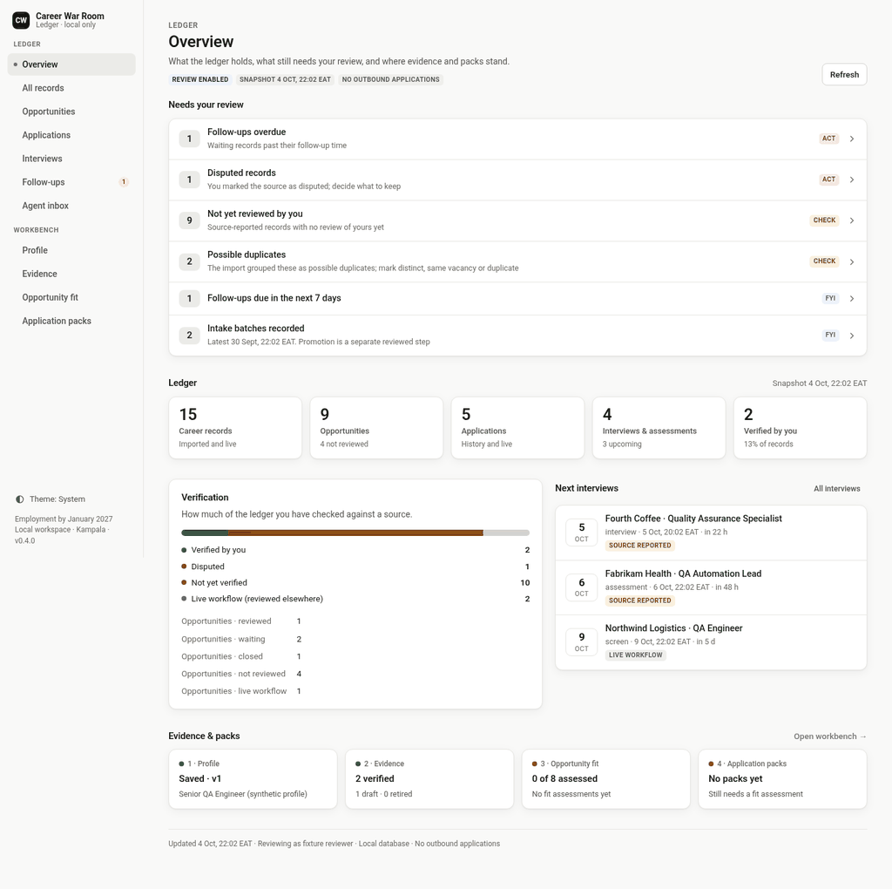

Project case study · private repository · 2026
Career War Room: A Human-Governed Evidence Ledger and MCP Server for AI Agents
A shared PostgreSQL evidence ledger and MCP server built for a team of AI agents, with human approval gates before consequential actions. Multi-agent coordination is In progress.
Built in the code, with tests, committed to a private GitHub repo · In progress started, not finished · Planned on the roadmap. Nothing here is “shipped”: the repo is private and runs on one machine. Numbers describe version 0.5.1 (design-refresh branch, head 2028a4b, 15 Oct 2026).
I designed and built it with my team of AI agents and coding assistants, with me as the human approver: I own the design and every approval, and the team did the work with me.
Summary
- Who built it: I designed and built it with my team of AI agents and coding assistants, with me as the human approver.
- What it is: a shared, audited PostgreSQL evidence ledger and MCP server built for a team of AI agents running my job search, with human approval gates. Agents propose. The database enforces the rules. I approve anything consequential. Multi-agent coordination (routing work between agents) is In progress: that code is interfaces only so far.
- Built: a PostgreSQL evidence ledger (PostgreSQL 16, 9 checksummed migrations, 48 tables with forced row-level security, an append-only audit log enforced by a database trigger, 18 append-only tables, 8 least-privilege roles), a staged import → human promotion pipeline, a local MCP server with 11 typed tools, and a local dashboard and workbench.
- Tested: 113 test functions in 19 files on version 0.5.1, including UI tests; 36 of them run against a real, disposable PostgreSQL and are skipped when no database is available.
- Honest about failure: the ledger rejected a newer snapshot rather than silently overwriting records. The protection worked. The workflow for accepting change is Planned.
AI agents don’t automatically make a reliable team
Give several capable agents one shared goal and you get predictable failures: two agents recommending opposite things, the same work done twice, context lost between sessions, decisions made on stale information, an agent acting before anyone approved it, and claims nobody can trace back to evidence.
These are not AI problems. They are failures quality engineers already know from distributed systems and release pipelines: race conditions, duplicate side effects, missing audit trails and unauthorized changes.
The engineering challenge: make independently operating agents collaborate reliably on one shared state, without handing them control of consequential decisions. Every important record must be correct, traceable and approved by a human before it counts.
Product vision
- Research
- Evaluate
- Learn
- Build
- Position
- Apply
- Interview
- Debrief
- Improve
This is the intended operating model. The table shows what is real today.
| Responsibility | Who does it today | Connection to the ledger |
|---|---|---|
| Job market research | Job-discovery agent | Planned: per-run files with stable identity keys feeding intake |
| Opportunity evaluation | Workbench fit rubric (5 dimensions, hard gates) | Built in code; no live assessments recorded yet |
| Career intelligence | Pipeline-tracker agent; its tracker is the master record | Built: one approved snapshot imported. Planned: weekly reconciled imports |
| Learning & development | Learning agent | Not connected (out of scope for now) |
| Application prep | CV agent | Built: immutable, evidence-bound application packs; none created yet |
| Interview prep | Strategist and interview-coach agent | Built: interview events readable via MCP; prep stays outside the ledger |
| Performance analysis | Strategist's weekly review | Built: analytics_summary tool. Planned: use in the weekly review |
| Brand & networking | Network-and-brand agent | Not connected |
| Human oversight | Me | Built: approval, review and promotion gates |
Current implementation
| Component | Status | What it does |
|---|---|---|
| Evidence ledger (PostgreSQL) | Built | PostgreSQL 16, 9 checksummed migrations, 48 tables with forced RLS per programme, append-only audit log (update and delete blocked by trigger), idempotency keys, optimistic versions; approval records writable only by the human database role |
| Staged import → promotion | Built | Agent exports are staged by an importer-only role. A separate promoter role, after my review, promotes them in one all-or-nothing transaction bound to a SHA-256 of the staged payload |
| Agent intake | Built | A scheduled worker checks an approved drop folder every 15 minutes. It rejects invalid JSON, partial files and symlinks, and never promotes |
| Local MCP server (stdio) | Built | 11 typed tools: ingest, review and queue opportunities; evidence; tasks; analytics; career history and events; profile; opportunity fit; application packs. No send or approve tool exists |
| Dashboard and workbench | Built | Local-only and login-protected. Ledger review, then profile → evidence → fit → application pack |
| Dashboard design refresh | Built | On the design-refresh branch, pushed to the private remote. UI tests make up 12 of the 113 test functions |
| Multi-agent coordination (routing work between agents) | In progress | Task contracts, a model-adapter interface and a routing table exist as interfaces only. No agent is routed or called by the code yet |
| Reconciliation of newer snapshots | Planned | See the incident below |
| Live agent → MCP calls | Planned | Agents run elsewhere and can't reach a stdio server; today they use the approved file drop |
Architecture: data flow and trust boundaries
- Agent side → approval: agents only write validated JSON exports. They hold no database credentials and no send tool. Nothing crosses without my approval of the file drop.
- Staging → ledger: the intake worker can only stage. Promotion is a separate role and a separate human step.
- Ledger → readers: the MCP server and dashboard run on the same machine. Their database role comes from the process (reader by default, writer only when set), and every query is scoped by row-level security.
Engineering a trustworthy shared state
Five invariants. Each is enforced in the database or the server, not by asking agents nicely, and each has tests. All five are Built.
Agents can't overwrite authoritative records.
Evidence is staged before it is promoted. The importer role can stage but not create ledger records; staged batches are immutable; re-observations are added as new observations, and conflicts become review proposals rather than edits.
Tests:
test_staging_login_cannot_create_opportunity,test_worker_real_staging_replay_never_promotes,test_observation_conflicts_are_preservedConsequential changes need human authorization.
Separate promoter, reviewer and human roles. A reviewer or promoter cannot approve. Promotion needs explicit acceptance and the payload hash. Approval records are writable only by the human database role. No MCP tool can send or approve.
Tests:
test_reader_cannot_submit_review_and_reviewer_cannot_approve,test_history_is_immutable_and_promoter_cannot_approve,test_promotion_requires_role_and_acceptance,test_catalog_and_schema_validationEvery material change is traceable.
Append-only audit events (update and delete blocked by trigger), 18 append-only tables in total, and provenance required on every source.
Tests:
test_ingest_retry_review_and_audit,test_immutable_workbench_reader_denial_and_audit_rollback,test_source_requires_provenanceConcurrent operations can't silently overwrite each other.
Optimistic versioning: every review and edit carries the version it expects, and a stale write is rejected as a conflict.
Tests:
test_concurrent_reviews_cannot_overwrite,test_concurrent_profile_edits_do_not_overwrite,test_review_follow_up_and_stale_versionRepeated requests don't duplicate effects.
Idempotency keys (required by the ingest tool) and receipts for intake and promotion. The same key with a different payload is rejected.
Tests:
test_ingest_retry_review_and_audit,test_inbox_receipt_replay_and_program_separation,test_promotion_counts_replay_and_safe_histories
Alternatives considered
| Option | Why I rejected it |
|---|---|
| Let agents write to the database directly (live MCP writes) | Puts credentials and consequential writes in non-deterministic workers. Staging plus human promotion is slower but keeps the ledger authoritative |
| Update records in place | Loses history and hides conflicts. Append-only observations and versions keep both values and ask a human |
| Enforce rules only in application code | One bug or one new tool bypasses them. Forced RLS, role grants and triggers hold even if the code is wrong |
| Let the model pass the tenant or run its own SQL | The programme scope is fixed by deployment, and models get no arbitrary SQL |
| Expose an HTTP server for remote agents now | A network endpoint is a new attack surface. stdio first; an authenticated HTTP transport is Planned on a synthetic database |
| Put the machine on a shared private network for agent access | It would expose the machine to every agent. A one-way, encrypted pull bridge is an option under review |
| Make the database the master straight away | Two sources of truth. The tracker stays master until two imports in a row reproduce its numbers exactly |
Quality engineering for agentic systems
I’m not abandoning QA to become an AI engineer. I’m applying quality engineering to a new class of systems.
What the 113 test functions in version 0.5.1 cover, layer by layer. I haven’t re-counted tests per layer for this version, so the table shows coverage and status rather than per-layer counts.
| Layer | What it checks | Status |
|---|---|---|
| Unit / contract | Provenance, deadlines, deduplication rules, confidence handling, fit rubric, pack contents, MCP tool schemas | Built |
| Database | Migrations parse; state-transition and data constraints in real PostgreSQL | Built |
| Integration | Real, disposable PostgreSQL, with non-superuser roles for the permission checks; spread across the layers in this table | Built (36 test functions need it) |
| Authorization | Row-level security, role separation, login, CSRF, Host and Origin checks, cross-programme denial | Built |
| Concurrency | Two writers race: one wins, one gets a conflict | Built |
| Idempotency | Retries and replays don’t duplicate effects; a changed payload under the same key is rejected | Built |
| Workflow | Multi-step paths: evidence → fit → pack, invalidation when evidence changes, promoted data shown | Built |
| Recovery | A mid-transaction failure rolls back everything; retries keep the source; setup fails closed | Built |
| Adversarial | Prompt-injection text stays data, escaping, invalid JSON, tampered payload hash, no secrets in responses | Built (deterministic) |
| UI | Page structure, accessible names, theme and focus, form fields kept, template behaviour | Built |
| Agent / model evaluation | 8 golden cases: expired deadline, ineligible location, injection in a job page, fabricated statistic, approval replay, conflicting sources and more | Planned: fixtures today, none executed; a public eval harness on synthetic data is next |
| End-to-end MCP client | A real MCP client calling the server | Planned |
| Restore drill | Restore the newest backup into a throwaway database and compare counts | In progress (not yet done) |
Totals: 113 test functions in 19 files. Seven of them are parametrized, so pytest collects 136 test cases. Without a database, 100 cases pass and the 36 PostgreSQL tests are skipped (a skip is not a pass); against a throwaway local PostgreSQL 17, all of them passed (18 Oct 2026). CI workflow (PostgreSQL 16, Python 3.12): configured; not yet run (Actions is billing-locked).
Security and trust boundaries
stdio is not secure by itself. It removes the network endpoint, but the calling process, its permissions, its credentials and the validation of every input still decide what can happen.
| Threat | Risk | Current control (Built) | Remaining limitation |
|---|---|---|---|
| Prompt injection (e.g. a malicious job listing) | Text in a listing tries to make an agent act | Listing text is stored as data, never executed; no send or approve tool; model routing rejects send-type tasks; agents hold no database credentials | No model is evaluated against it yet (golden cases are fixtures). Poisoned text could still mislead a human or agent reading it |
| Tool misuse | An agent calls a tool with bad or extra input | Typed tool schemas with extra fields forbidden; idempotency key required; reader by default, writes need the writer role; no arbitrary SQL | The role is set by the process that starts the server; there’s no per-agent identity |
| Unauthorized promotion | Unreviewed data becomes “truth” | Separate promoter role, explicit acceptance, payload SHA-256 binding, all-or-nothing transaction; the promoter can’t approve | Local PostgreSQL still accepts passwordless local logins, so role separation stops mistakes, not a hostile local process. Password auth is Planned |
| Data poisoning | Wrong facts enter the ledger | Provenance required; re-observations append and conflicts go to review; verified evidence needs a source and a note; positive fit scores need linked evidence | Provenance isn’t truth: verification is still a human step |
| Privilege escalation | A low role reads or writes more than it should | Forced RLS, non-superuser runtime roles, composite cross-programme keys; a reader with no scope sees 0 rows | Same local-login limitation; the owner role lives on the same machine |
| Sensitive-data exposure | Personal data or secrets leak | Dashboard on localhost only, with login, Host/Origin/CSRF checks and a strict CSP; secrets never returned; config files owner-only; database listens on localhost only; public material uses synthetic data | Real personal data sits on one machine (only the code is on the private remote); backups aren’t restore-tested yet |
Engineering incident: snapshot reconciliation
| Stage | What happened |
|---|---|
| Context | The pipeline tracker (a JSON file kept by one agent) is the master. The ledger held one approved snapshot of it. |
| Failure | When a newer tracker snapshot arrived, the ledger rejected it instead of versioning it: promotion stopped with PREVIOUS_SNAPSHOT_RECONCILIATION_REQUIRED, and the ledger’s statuses went stale. |
| Root cause | Promotion was designed for one clean first import. A later snapshot with existing IDs needs explicit reconciliation, and that step didn’t exist. The ID crosswalk showed only partial overlap: 40 records in both, 18 only in the database, 36 only in the tracker. Status vocabularies had also drifted. |
| System behaviour | It failed closed. Nothing was silently overwritten or deleted. |
| Lesson | Fail closed, then design the happy path for change, the same way you would for duplicate callbacks in a payments system. |
| Next step | Planned: a newer snapshot becomes a new version, conflicts are listed explicitly, missing IDs are not treated as deletions, and replaying the same snapshot changes nothing. The tracker stays master until two imports in a row reproduce its numbers exactly. |
From agent outputs to human decisions
Agents generate intelligence, the interface makes it actionable, and I keep decision authority.

design-refresh branch), synthetic data: fictional companies and a fixture person.One workflow: from job discovery to approved application
- An agent’s opportunity reaches the system. Today: a validated export in the approved drop folder. The MCP
opportunities_ingesttool exists, but no live agent calls it yetBuilt (file drop) · Planned (live MCP call) - Validate and stage: invalid JSON, partial files and symlinks are rejected; the importer role stages onlyBuilt
- Deduplicate: the same opportunity maps to one record; a replayed export is a no-opBuilt
- Failure: a newer snapshot of existing records is rejected, not versionedBuilt (fails closed)
- Recovery: version it, list conflicts, never treat missing IDs as deletionsPlanned
- Record evidence: each claim has a source and a verification noteBuilt
- Evaluate fit: a 5-dimension rubric with hard gates; unknowns aren’t zero-filledBuilt
- Show it in the dashboard’s “Needs your review” listBuilt
- Request approval: an application pack is built from selected, verified claims onlyBuilt
- Record my decision: immutable, versioned, idempotent and tied to the server’s identityBuilt
- Update the ledger: promotion in one audited, all-or-nothing transactionBuilt
- Make it available to other agents: readable through the MCP tools; agents elsewhere get a weekly read-only exportBuilt (MCP read tools) · Planned (export to agents)
Metrics
| Metric | Value |
|---|---|
| Test functions (version 0.5.1) | 113 in 19 files, including UI tests |
| Test functions that need a real PostgreSQL | 36 (skipped without a database) |
| MCP tools | 11 (none can send or approve) |
| PostgreSQL version (CI and docs) | 16 |
| Checksummed migrations | 9 |
| Tables (all with forced row-level security) | 48 |
| Append-only tables (update/delete blocked by trigger) | 18 |
| Database roles | 8 |
| Golden eval cases (fixtures, not yet executed) | 8 |
| Intake interval | 15 minutes |
To measure next (no values yet): duplicate imports rejected · conflicts detected per import · time to ingest and reconcile a snapshot · share of recommendations with linked evidence · actions requiring approval · time to recover from a restore.
Limitations
- Private: the code is on a private GitHub repo; the system runs locally on one machine. CI is configured but hasn’t run (Actions is billing-locked).
- The data is a single approved snapshot, so the ledger lags the tracker until reconciliation exists.
- No live MCP client call has been tested end to end, and no model is evaluated yet. Multi-agent coordination is interfaces only: no agent is routed or called by the code.
- Local PostgreSQL accepts passwordless local logins, so role separation guards against mistakes, not a hostile local process.
- Backups exist but haven’t been restore-tested.
- Little real data in the workbench so far: no fit assessments or application packs created yet.
- The core was built over about four days (30 Sep – 3 Oct 2026); the design refresh and two small releases (0.5.0 and 0.5.1) followed by 15 Oct, with a deliberate cap on time so job applications come first.
Roadmap
| Next | Status |
|---|---|
Commit and push to a private remote (design-refresh, 11 Oct 2026) | Built (done) |
| Restore drill (newest backup into a throwaway database, compare counts) and docs refresh | In progress |
| Snapshot reconciliation (versioning, explicit conflicts, no deletions from missing IDs, replay = no-op) | Planned |
| Password authentication for local PostgreSQL | Planned |
| Weekly read-only export to the agents; optional encrypted pull bridge | Planned |
| Authenticated HTTP transport, tested on a synthetic database in Docker | Planned |
| Transactional outbox (idempotent consumers, no duplicates after restart) | Planned |
| Public eval harness on synthetic data, seeded from the golden cases | Planned |
| Go / no-go review on 25 Oct 2026: continue only if it changes real decisions | Planned |
What This Project Represents
This project is about how I approach a new class of systems. I’m not leaving quality engineering to become an AI engineer; I’m applying it where it’s now needed most.
- QA automation: the same discipline I’ve used for about 8 years in quality work (including product-owner and QA work as co-founder of Quartz & Binary Synergy), with 5+ years in dedicated QA roles. Invariants first, tests that prove them, and failures written down rather than hidden.
- AI evaluation: agent output is treated as untrusted input. It is staged, checked and promoted only after a human review. An eval harness for the agents themselves is the next step.
- Agentic systems: shared state and tool access built so a mistake by one agent can’t silently become everyone’s truth. Coordination between agents is In progress: the task contracts and routing exist as interfaces only.
- Forward-deployed engineering (my direction): a real user with real stakes (my own job search), real constraints (cost, time, privacy) and a system that changes as those needs change. Building with the user and keeping it trustworthy is the work I’m growing toward.
The goal is agents that collaborate safely, keep a trustworthy shared state and produce outcomes a human can verify and control. This page documents the decisions, the failures, the testing and the open challenges, including what isn’t built yet.